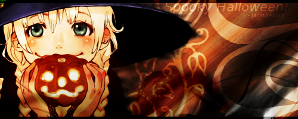
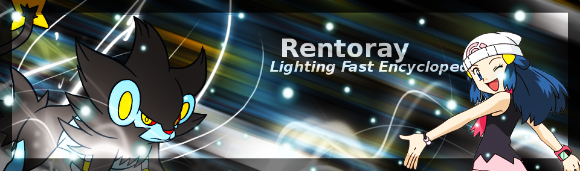
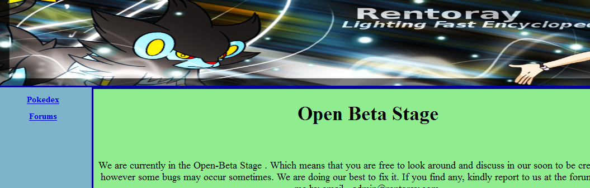
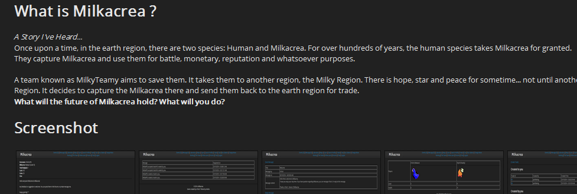
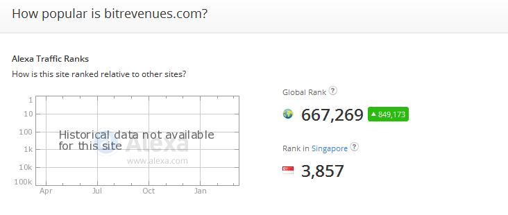

As a digital artist
I learnt making digital arts when I was primary six mainly because I would like to make virtual currency for a game that I played. Many experienced users of the gaming forums recommended me GIMP over Photoshop because the latter is more expensive. The first few digital arts I created were simply renders pasted on gardient backgrounds.
Eventually (despite the lack of experience on digital arts) I opened a digital graphic forums on the Internet, GFXMeetUp. During which, I learnt techniques to create better digital graphics from my (strangly) more experienced members. It was the second most successful website I opened. However, due to the fact that I was addicited to gaming, I shutted down the forums a few months later.
Yet I am currently continuing to learn new techniques to create new types of images. I also took part in a few online contests before. The best achievement for me would be being the first runner up for the "Halloween" contest of the forums "PokeCommunity" in 2015.
As a freelancer
I started freelancing in 2013 so as to have enough virutal currency (ForumPromotion Points) to buy a top level domain name. That was when I visited a lot of forums and blogs to make "fake" posts and comments. After a few months, I managed to buy a .com domain for my Pokemon encyclopedia, "Rentoray". I coded the site with HTML and simple PHP that I learnt by myself online - more on this can be found in the next section.
I joined Bitcointalk in August 2013. I made a few virtual posts and left the community. I came back in late 2014 and found out that there is something online called signature campaign. It is a contract with online business to make posts on Bitcointalk wearing signature that would promote that online business. For my first contract, I made about 4 USD worth of Bitcoin every week. As my rank went up, I made about 10 USD worth of Bitcoin weekly. I came out of contract with the company roughly six months later and joined serveral other one-month campaigns. I made about 50 USD worth of Bitcoin per month form just posting on online forums. I signed up for BitX campaign in late 2015 and I am still with them now. Today, I am earning about 10 USD worth of Bitcoin weekly from just posting. The earnings dropped from ~50 USD to ~40 USD worth of Bitcoin per month because I am now focusing on my online business - "BitReveues".
As a web developer
I wanted to create my own online browser based RPG game similar to other's Pokemon fan made games. I was told by experienced developers that I need to learn HTML, CSS, Javascript, PHP and MySQL before I could create such game. And so I went on to learn HTML on W3Schools when I was primary six. I stopped half way when I started GFXMeetup.
I started learning HTML again when I was secondary one and completed it. Then I tried learning CSS and JavaScript. I learnt part of CSS and JavaScript and skipped to PHP. However I did not complete PHP on W3Schools on my first try. I stopped for about a year before I decided to give it a try again. I managed to learn basic PHP and Advanced PHP when I was secondary two.
Equipped with basic HTML, CSS, JavaScript and PHP knowledge, and knowing that I do not have the skills to create a RPG yet, I created an encyclopedia for Pokemon, named in Rentoray. Bought a top level domain name for it (.com) using the virtual currency I earned from freelancing. I stopped and shut down the website after I am addicted to gaming (again).
Determined to create my own browser based RPG game, I read open source code on various web applications and learnt more about PHP. To have a better understanding in working application, I created a plugin for the open source community software, MyBB, in 2014. After I became more familiar with PHP, I started developing my own online RPG, Milkacrea. On June 19 2014, I uploaded my game to the internet at Milkacrea.ml. It was somewhat successful with ten members registered a day after. However, the features that my game have is incomparable to other RPG games. I was forced to close the game two weeks later as an unknown person told me that my site is vulnerable to XSS and MySQL Injection - which was true after some researching and testing.
After I learnt how to fix the problem and added some new features, I release the game as closed-beta (people need to obtain a key from me before they can access the game) at Milkacrea.ml in August 2014. I presented my game idea at Halogen NFTE Biz Camp 2014 in front of a panel of judges - including Singapore Google head. I received "Best Idea" award after the event. This motivated me to keep developing my RPG. However, the motivation dont last long. I shut down the game in October 2014 again.
Knowing that the amount of Bitcoin I earned on Bitcointalk will not help me much, I came up with a unique faucet idea - a faucet is a website that give out free Bitcoin and the owner earn profit from advertisements. My idea is to create a free lottery site that shares it revenues fairy using provably fair method. With my script up and running, I went on to purchase the domain BitRevenues.com using the Bitcoin I earned online. My site was released in July 2015 under the name BitRevenues. I have a good amount of people from Bitcointalk visiting my site. I also advertise on other websites and advertising networks and managed to get over 1000 members registered in three month. In December, I introduced an update to my site that require no registration to claim a free ticket. This update increases the traffic to my site by a lot as no registration is needed.
Today, I have yet to break profit. Good news is that my SEO finally works in February 2016, ranked in the top ten of Google, Bing and DuckDuckGo results for the keyword "free bitcoin lottery". Additionally, BitRevenues become top 5000 sites in Singapore and top 1 000 000 sites worldwide (Alexa). I believe that if I continue to work on it, I will break profit one day.
Currently, I am equipped with basic HTML, CSS, JavaScript (very basic), PHP , MySQL and more recently (for this assignment) jQuery (a JavaScript library) skills. I am also a proud developer of a Bitcoin site and two MyBB plugins.